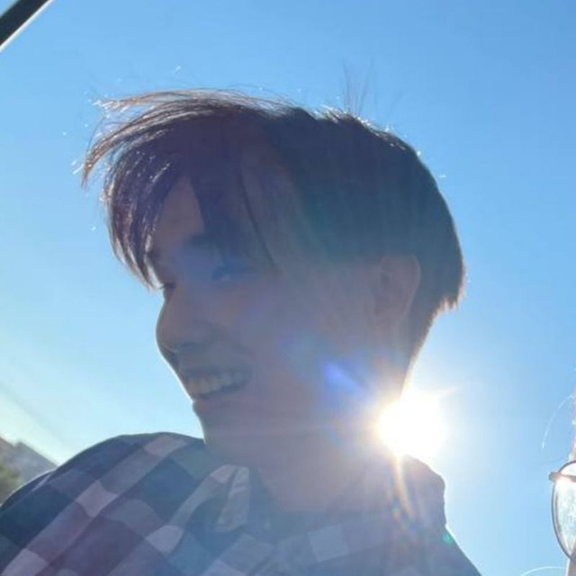
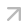
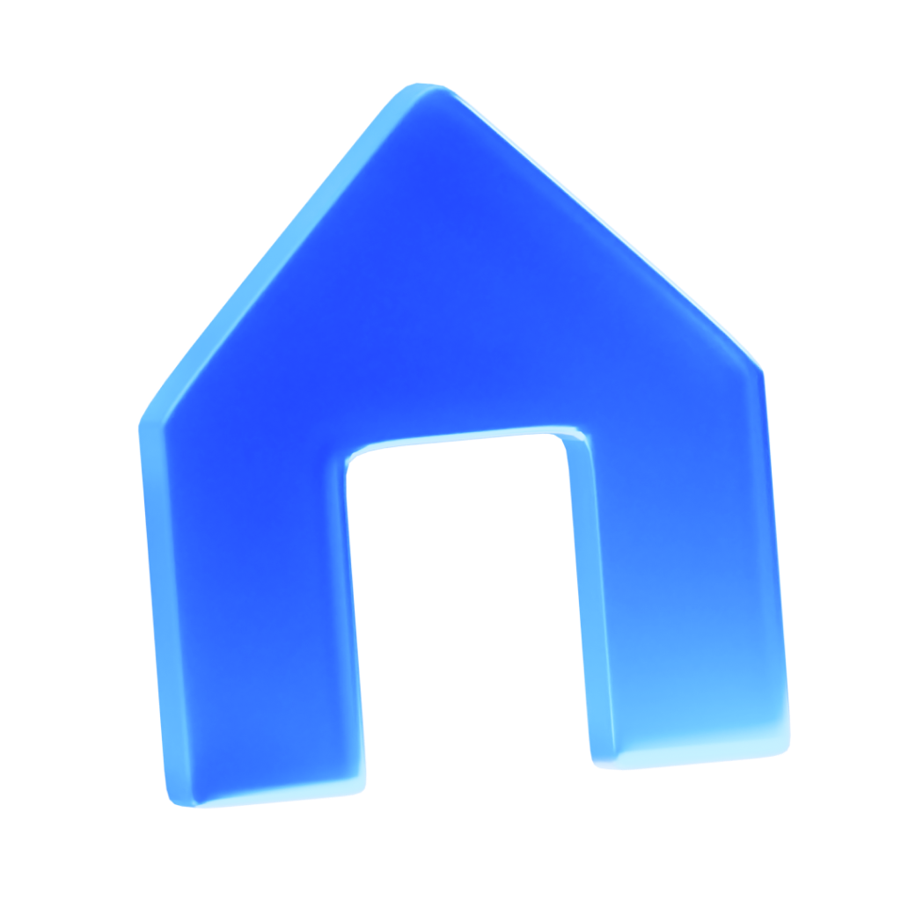

Привет, я Владимир
Рад видеть вас
в своем портфолио
Проектирую удобные интерфейсы, создаю 3D-графику и собираю аккуратные сайты
Посмотреть CV


поиске работы
01 / От идеи до результата
Сайты, цифровые продуктыИзбранные работы05
и решения для разных задач.
За каждым проектом —
любопытный человек.
Место для вашего фото
Привет, я [ваше имя]Делаю сложное
Делаю сложное
понятным и живым.
Здесь будет ваша история: чем вы занимаетесь, что вам интересно и какой подход к работе вам близок. Замените этот текст на несколько честных предложений о себе.
Этот сайт — пространство для больших проектов, маленьких находок и идей, которым хочется дать форму.
Веб-дизайнИнтерфейсыВизуальные эксперименты
На связи
Добавьте здесь свою почту и ссылки на соцсети.
Коллекция идей / В процессе и вне рамок
чтобы узнать чуть больше ↙
Архив*
Маленькие проекты. Случайные находки.
Эксперименты без большого повода.
чтобы узнать чуть больше ↙
Демо-коллекция. Замените примеры своими проектами в js/projects.js.